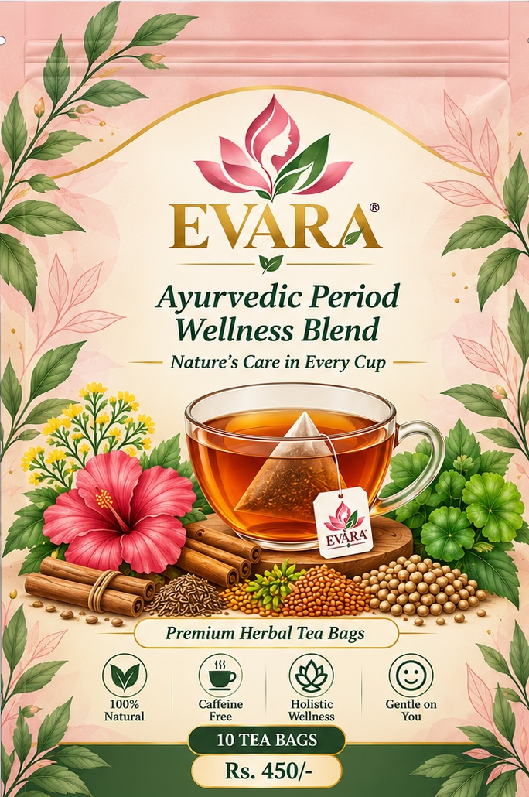
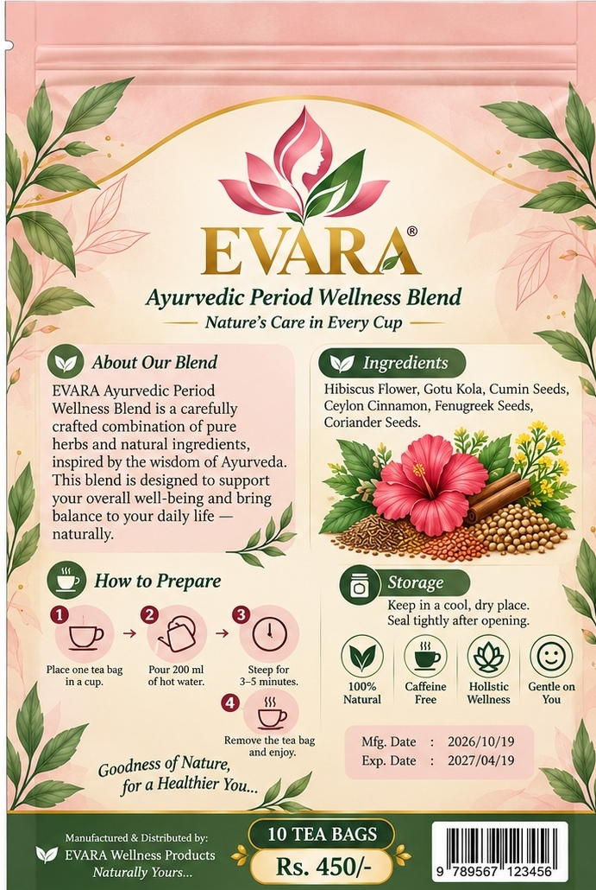
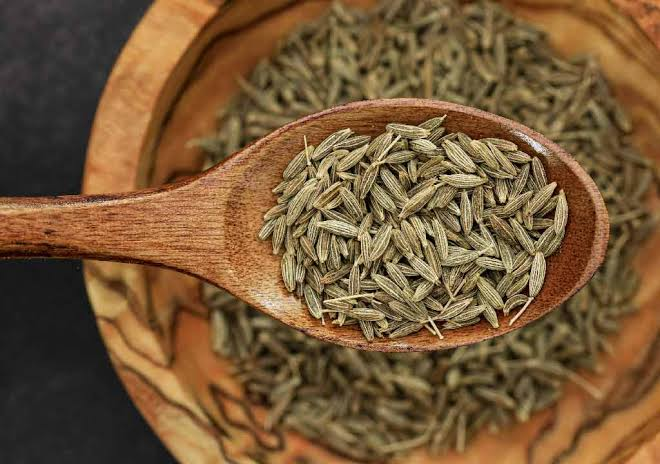
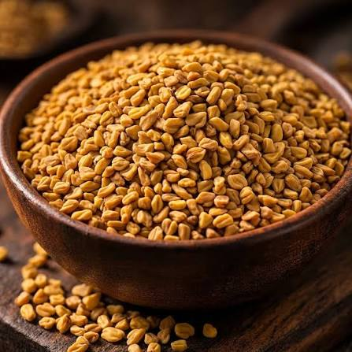
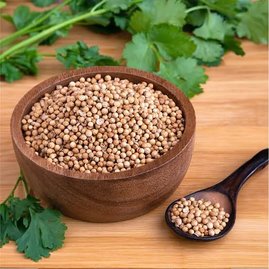
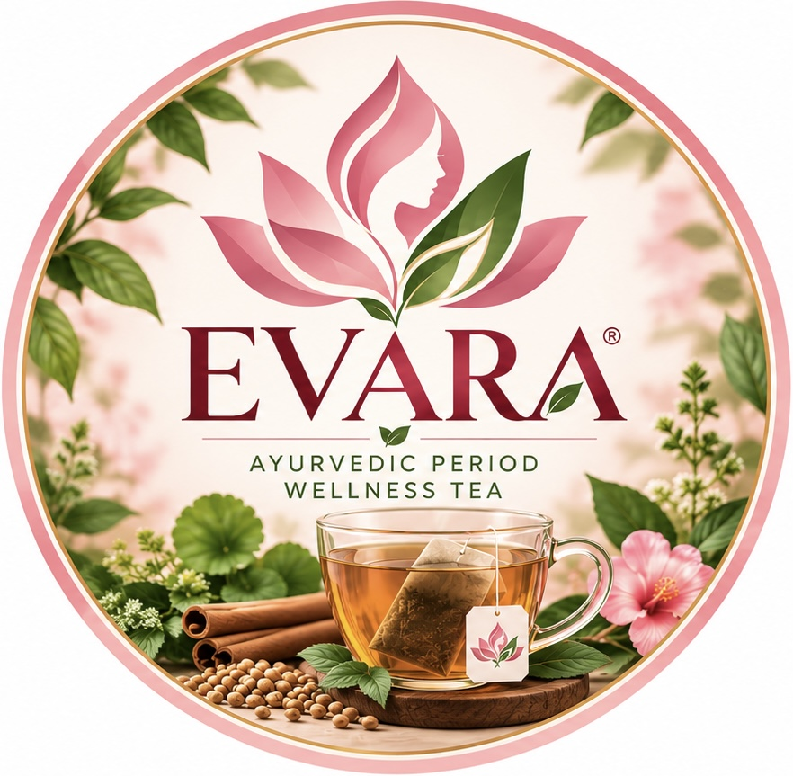

Hibiscus Flower
Hibiscus is a colourful flower used in many food and drink traditions. In infusions, it is often appreciated for its tart, fruity character and deep red colour.
MEET YOUR NEW RITUAL
Simple to prepare, lovely to make part of your day.

A MOMENTEVARA SIGNATURE BLEND
A herbal tea blend featuring hibiscus flower, gotu kola, cumin, Ceylon cinnamon, fenugreek and coriander.
Continue to Orders & Delivery to choose your quantity and place an order.
INSPIRED BY THE BOTANICAL WORLD
Six herbs and spices featured in EVARA's signature blend.

Our pack lists hibiscus flower, gotu kola, cumin seeds, Ceylon cinnamon, fenugreek seeds, and coriander seeds.
Hibiscus is a colourful flower used in many food and drink traditions. In infusions, it is often appreciated for its tart, fruity character and deep red colour.
Gotu kola (Centella asiatica) is a leafy plant found in South and Southeast Asia and has a history of use in traditional practices. This description does not imply a proven health effect from drinking this blend.

Cumin is an aromatic seed commonly used in South Asian cooking. It contributes an earthy, warm and distinctive flavour to the blend.
Ceylon cinnamon is a fragrant bark spice associated with Sri Lanka. It adds a warm aroma and a gently sweet, woody note.

Fenugreek seeds are used in cooking and traditional preparations. They have a distinctive aroma and a slightly bitter, maple-like flavour.

Coriander seeds are widely used as a culinary spice. Their flavour is mild, citrusy and gently warm, helping round out the blend.
Select any ingredient name to search Google for more information.
Ingredient descriptions are for general information only and are not medical advice. Individual suitability can vary.

YOUR DAILY PAUSE
Place one tea bag in your favourite cup and add hot water.
Let it steep for 3–5 minutes.
Remove the tea bag and enjoy your cup mindfully.
Storage: Keep in a cool, dry place and seal tightly after opening.